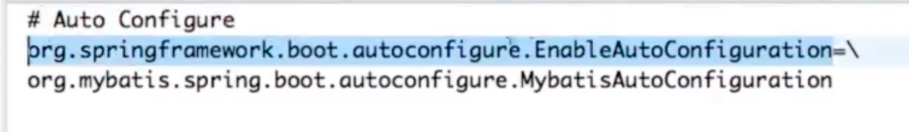

自定义springboot的起步依赖¶
javaconfig¶
Javaconfig代码说明 HttpClientAutoConfiguration.java
@Configuration
@ConditionalOnClass({HttpClient.class})
@EnableConfigurationProperties(HttpClientProperties.class)
public class HttpClientAutoConfiguration {
private final HttpClientProperties properties;
public HttpClientAutoConfiguration(HttpClientProperties properties){
this.properties = properties;
}
/**
* httpclient bean 的定义
* @return
*/
@Bean
@ConditionalOnMissingBean(HttpClient.class)
public HttpClient httpClient(){
RequestConfig requestConfig = RequestConfig.custom().setConnectTimeout(properties.getConnectTimeOut())
.setSocketTimeout(properties.getSocketTimeOut()).build();//构建requestConfig
HttpClient client = HttpClientBuilder.create().setDefaultRequestConfig(requestConfig).setUserAgent(properties.getAgent())
.setMaxConnPerRoute(properties.getMaxConnPerRoute()).setConnectionReuseStrategy(new NoConnectionReuseStrategy()).build();
return client;
}
}
配置类¶
HttpClientProperties.java 代码说明
@ConfigurationProperties(prefix="spring.httpclient")
public class HttpClientProperties {
private Integer connectTimeOut = 1000;
private Integer socketTimeOut = 10000;
private String agent = "agent";
private Integer maxConnPerRoute = 10;
private Integer maxConnTotaol = 50;
public Integer getConnectTimeOut() {
return connectTimeOut;
}
public void setConnectTimeOut(Integer connectTimeOut) {
this.connectTimeOut = connectTimeOut;
}
public Integer getSocketTimeOut() {
return socketTimeOut;
}
public void setSocketTimeOut(Integer socketTimeOut) {
this.socketTimeOut = socketTimeOut;
}
public String getAgent() {
return agent;
}
public void setAgent(String agent) {
this.agent = agent;
}
public Integer getMaxConnPerRoute() {
return maxConnPerRoute;
}
public void setMaxConnPerRoute(Integer maxConnPerRoute) {
this.maxConnPerRoute = maxConnPerRoute;
}
public Integer getMaxConnTotaol() {
return maxConnTotaol;
}
public void setMaxConnTotaol(Integer maxConnTotaol) {
this.maxConnTotaol = maxConnTotaol;
}
}
方式二：不在主类的子包中¶
1. 注解方式¶
增加注解
@Target(ElementType.TYPE)
@Retention(RetentionPolicy.RUNTIME)
@Import(HttpClientAutoConfiguration.class)
public @interface EnableHttpClient {
}
在主入口中增加注解
@SpringBootApplication
@EnableHttpClient
@EnableAsync
public class HouseApplication {
public static void main(String[] args) {
SpringApplication.run(HouseApplication.class, args);
}
}
2. 配置方式¶
resource下增加 META-INF/spring.factorie 文件中增加
